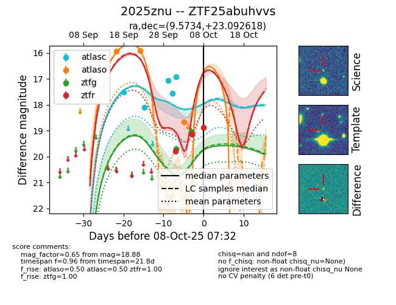
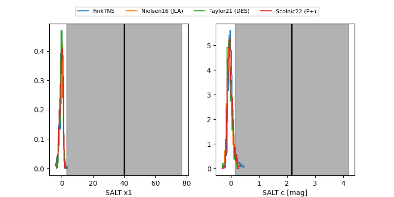

FINK: ZTF25abuhvvs
Lasair: ZTF25abuhvvs
ALeRCE: ZTF25abuhvvs
TNS: 2025znu
YSE: 2025znu
ZTF25abuhvvs (ztf,fink)
2025znu (tns,yse)
equatorial (ra, dec) = (9.5734,+23.09262)
galactic (l, b) = (119.0034,-39.67884)


last atlasc=16.93, atlaso=18.67, ztfg=19.05, ztfr=18.88
5 atlasc, 3 atlaso, 2 ztfg, 3 ztfr detections